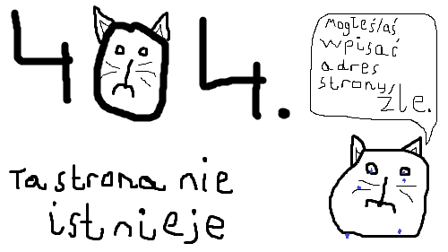

Możesz tu być bo:
wpisałeś/aś adres strony źle
ta strona jest pod innym adresem
ta strona już nie istnieje
lubisz strony z błędem 404
KotoBlog v0.5.1-beta.2 został zaprojektowany, zrobiony i opracowany przez Oliwiera Troć (2020 - 2021).
404 404 404 404 404 404 404 404 404 404 404 404